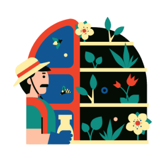

AS DUAS VERTENTES DO DESENVOLVIMENTO SUSTENTÁVEL:
- FOCO NOS ASPECTOS ECONÔMICOS E CONSUMO DE RECURSOS;
- FOCO NOS ASPECTOS ECONÔMICOS, SOCIAS E AMBIENTAIS.
ALGUNS OBJETIVOS DA AGRICULTURA SUSTENTÁVEL:
- MELHOR QUALIDADE DO AMBIENTE E DOS ALIMENTOS PRODUZIDOS;
- USO MAIS EFICIENTE DE RECURSOS NÃO RENOVÁVEIS;
- USO DE TÉCNICAS QUE NÃO POLUAM AR, SOLO E ÁGUA;
- CAPTAÇÃO DE ÁGUA DA CHUVA PARA IRRIGAÇÃO SUSTENTÁVEL;
- REDUÇÃO DE AGROTÓXICOS NAS PLANTAÇÕES;
- PRESERVAVAÇÃO DE FLORESTAS E MATAS, EVITANDO O DESMATAMENTOPARA EXPANSÃO AGRÍCOLA.
MANEJO NÃO TÓXICO DE PRAGAS :
VEJA ALGUMAS MEDIDAS PREVENTIVOS DE CONTROLE QUE NÃO DEIXAM RESÍDUOS NO ALIMENTO E NO AMBIENTE.
MEDIDAS PREVENTIVAS:
- Nutrição equilibrada das plantas com macro e micronutrientes;
- Adubação orgânica;
- Uso de variedades resistentes a pragas.
MEDIDAS DE CONTROLE:
- Uso de vespas como predadores naturais de pragas;
- Agentes de controle biológicos;
- Extratos de plantas.